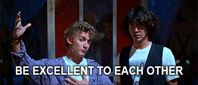

Goodbye WIT & Thank You
A look back at my time founding and organising Women In Tech Nottingham after handing over the reigns
Women In Tech Nottingham had it’s first event in April of last year. It had taken months of discussions with sponsors, venues, organising social accounts, meeting potential speakers, getting advice from current meetup organisers. This has all come together for the first in many events I would go on to organise.
Jess Rose was the star of the show. She gave a fantastic talk on Imposter Syndrome, capturing many hearts and minds. After her talk, those who attended wrote on post its about what they wanted from the event. I was so stressed throughout the whole thing to be honest, it is still a blur.
In the following 15 months I hope I have met most of the hopes written on those post-its.
The whole experience has been an adventure. I have been involved in things I never could have dreamed, met amazing people and even grown personally.
To the members of WiTNotts:
Thank you for the adventure. Without your support Women In Tech Nottingham would never have become what it is. I will still be attending the event, though I will not be organising any more.
I have enjoyed getting you know all, and hearing about all the amazing things you’ve been getting up to. I hope that we remain friends.
Please continue to give Women In Tech your full love and support. Keep going to the various tech events in Nottingham. Help our fantastic tech community blossom to its full potential. The community is nothing without the people involved.
What’s happened in the past 15 months
We’ve had some amazing speakers. Thank you to everyone who has taken part and wowed us with their talks.
| Date | Event |
|---|---|
| 06/04/2016 | Jess Rose : Imposter Syndrome |
| 04/05/2016 | Annie Haley & Zoe Easey: Startups |
| 01/06/2016 | Liz Hardwick: Boosting Productivity |
| 01/07/2016 | Christine Cawthorne & Helen Clark: Content and Design |
| 01/09/2016 | Alex Roberts & Ruth Mills: IoT & Makers |
| 06/10/2016 | Katharine Childs & Chloe Cheeseman: Volunteering Tech |
| 03/11/2016 | Georgina Wilcox & Amy Dickens: Postmortem Culture at Google & Pathway To Proms |
| 01/12/2016 | Holiday Special with soldering from Nottinghacks |
| 01/12/2016 | Helen Clark joined as a co-organiser |
| 02/02/2017 | Helen Clark & Mair Perkins: Hack24 & Animation |
| 02/03/2017 | Sarah King & Samathy Barrat: Small Business Acting Bigger & Neo4J Graph |
| 05/03/2017 | Showing of Hidden Figures for International Womens Day raises £170 for Code Club |
| 18/03/2017 | Two Women In Tech Teams take part in Hack24 |
| 06/04/2017 | Helena Wootton & Samantha Deakin Hill: Personal Data Protection & Start Experiencing |
| 04/05/2017 | Gosia Borzecka & Anna Dodson: Sharepoint & Browser Security |
| 01/06/2017 | Rachel Evans & PaulineRoche: Tech For Good & Destruction, Decapods and Doughnuts |
| 02/07/2017 | Claire Lowry & Mary Baird-Wilcock: How to stop the glorification of BUSY & Agile |
Through these events we helped voluntary groups find volunteers, raised money for charity, helped school kids find work placements, taken part in careers fairs, along with building a fantastic community.
How you have changed me
Before Women in Tech I was a rather introverted student who had some exposure to the tech community through Hack24 and Tech Nottingham. I was terrified about speaking in public.
Since then, though I am still very nervous about public speaking, I think I am getting better at speaking in front of crowds. Talking to strangers and getting to know them is now enjoyable. Finally I have learnt more about the amazing community in technology.
The meetup has helped me mature, has taught me a lot about organisation and the many intricacies in managing an organisation at a small scale.
Looking to the future
Helen Clark is going to continue the Women In Tech legacy. Now that the meetup is partnering with Tech Nottingham I’m looking forward to it growing and doing great things. I only ever intended to run the meetup for 12 months. For it to truly represent our community, it needed to be taken over by a new person. I love Women In Tech Nottingham, but I am far to close to it. It is time for change.
The merging of brands between the meetup and conference is also a great thing. Saves a lot of confusion and I really think both organisations can help each other. It’s going to be a fantastic mutual partnership.
As for me, I’ll still be about. I will be attending as many of the events as I can as well as many of the other fantastic meetups in Nottingham. I am going to spend the time I used to use on WiT on studying. Also, I am going to practice what I have preached many times over the last year. I am going to give speaking a try.
Overall, it’s been a fun ride. I am grateful to you all and will be forever supporting WiT from the sidelines.
Never forget to be excellent to each other, and party on.
